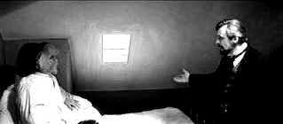

| Elephant
Man, The (SE)/ B+, B+ |
| Paramount/1980/123/ANA
2.35/BW |
John Merrick is a disfigured sideshow
exhibit when Dr. Frederick Treves happens on him in The Elephant Man.
Treves frees Merrick from the
horrific chains of his disease by the caring intervention. Set in late Victorian England in a world blowing
between modern and archaic medicine, the stirring drama is based on fact.
The greatest achievement of The Elephant Man is the
gradual evolution of Merrick from unwatchable freak to gentle human
being. It's a shared experience between screen characters and
audience. It's one of those difficult screen journeys that are
imminently satisfying on reflection.
 |
| Treves
implores Merrick. ©Paramount |
John Hurt gives a painfully delicate performance
as Merrick. Buried beneath hideous make-up replicating the distorted
appearance of Merrick, Hurt uses his voice to remarkable effect. Credit
director Lynch for making sure every subtle gesture in Hurt's performance
is cleanly delivered on film. Anthony Hopkins brings Treves to life with
insightful candor. A detached coldness provides Treves with distance,
yet beneath medical observer is a man who comes to care deeply.
Filming in black and white adds an edge of
documentary to the production. The shadowy photography of DP Freddie
Francis and stark sets of Stuart Craig focus attention on Merrick like
high key lights. The excellent script, written by Eric Bergen,
Christopher Devore and Lynch, is insightful, introspective and sensitive
without caving in to sentimental.
The Elephant Man is another DVD delivered respecting David
Lynch's druthers to no chapter stops. It's a bit of pain in
the neck. Blacks are rendered deeply and shadow detail is outstanding on
this widescreen DVD treatment. The image is consistently sharp with no
hint of artifact jitter or stingy compression. Some slight edginess
creeps in here and there. Overall depth of image is excellent. Contrast
range and overall light output are fine.
A solid but standard thirty minute making of featurette includes
observations of John Hurt, Mel Brooks, Jonathan Sanger, make-up designer
Christopher Tucker and DP Freddie Francis. A two minute short examines
making John Hurt's mask. A four minute narrated make-up photo gallery
concludes the package.
|
|
|
|

Selections from the Feature
Archive include articles on
Akira Kurosawa, Frank
Darabont, Blonde
Bimbos, Hollywood
Street Gangs, or Vietnam:
The Hollywood Pariah, and many more....
Body Parts

Hollywood's long fascination with
parts of the body is explored piece by piece.
Looking
for a good Foreign Film Fix? Here's a list of reviews that can get you
started on an overdose. Click here to satisfy the urge.


Agoraquest is
offering reviews, forums, news, and more dedicated to Sony products
including, televisions, cameras, audio, DVD, and more.

List Your
DVD
Reader DVD Reviews and base DVD information. You can also submit a list of
your favorite DVDs.

Home to The
American Society of Cinematographers. Includes features from
American Cinematographer Magazine and more...

"CinemaQuest
has matched the correct TV color of gray in a light fixture."__Joe
Kane
Monitor bias lighting in a pre-packaged configuration. Take the strain
off your eyes.

Terrific resource for learning about the
ins and outs of movie poster collecting.
|